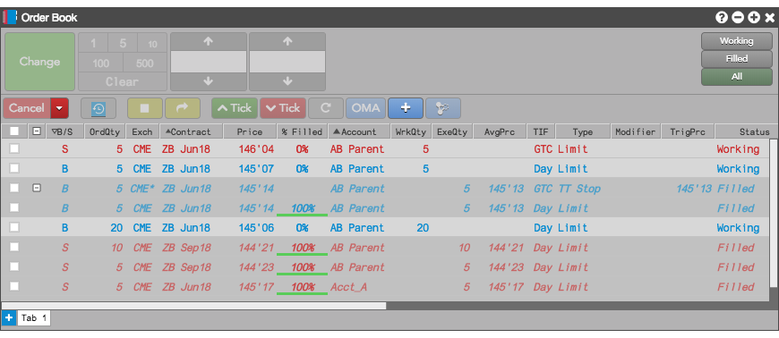
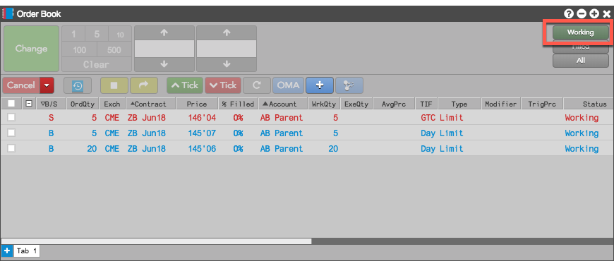
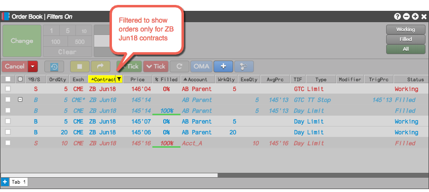
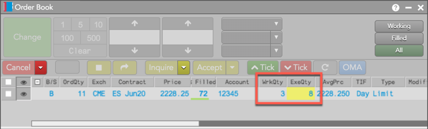

You can use this widget to see a list of your orders currently working in the market. For each order, you can monitor things like the working quantity, order type, percent filled, and so on.

You can quickly switch between viewing all orders, only working orders and only fills. For example, to show only working orders, click Working.

You can also filter the list based on values in one or more columns. If you hover the mouse cursor over the right side of a column title, the cursor changes to a hand to let you know you can use it to change the filter. For example, you can filter the display orders by contract by hovering over the Contract column and clicking the drop-down arrow.

You can also sort your orders by values in a column by clicking the column. Each time you click a column, the sorting switches between ascending, descending, and unsorted. For example, the first time you clicked the Account column, the orders would be sorted in ascending order by the Account column value; the second time you click the column, the orders would be sorted in descending order; and the third click would turn off sorting for the column values.
Tip: Partial fills are highlighted yellow in the ExeQty column in the Order Book widget and the Order Book pane in the Orders and Fills widget.
